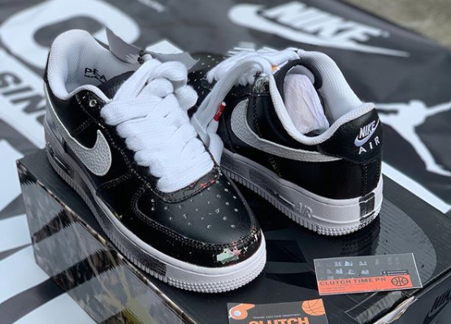
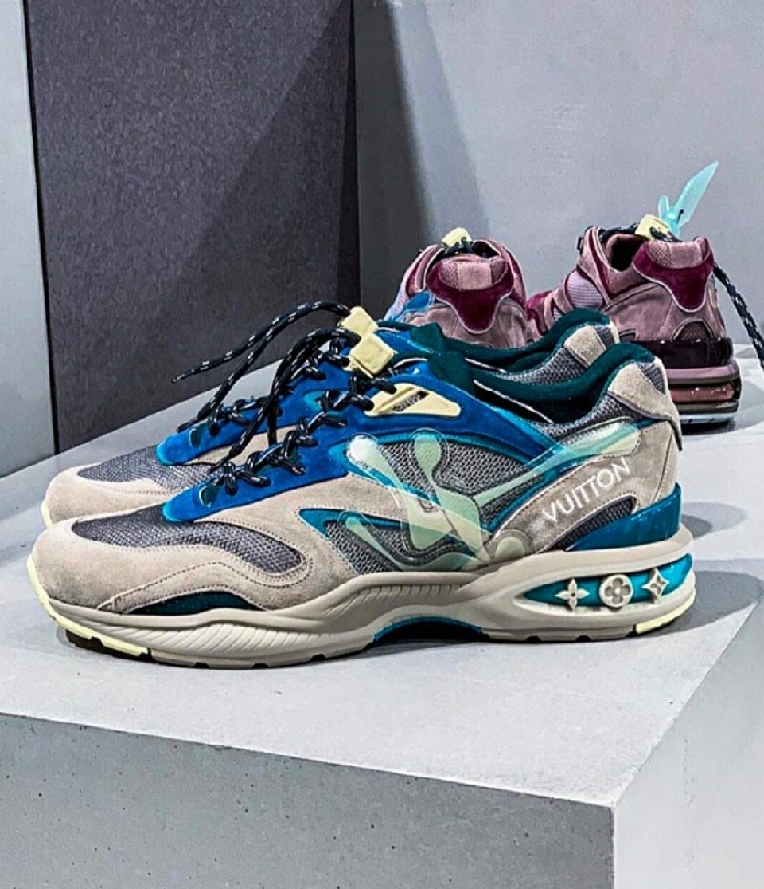
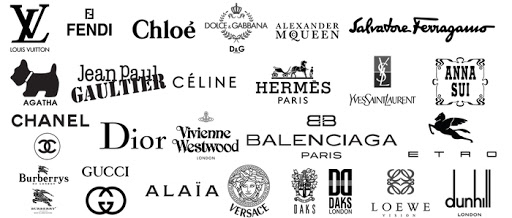
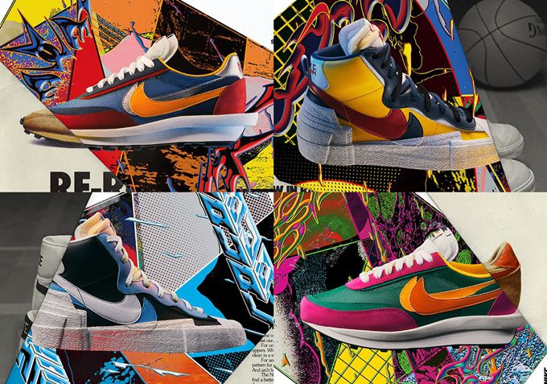
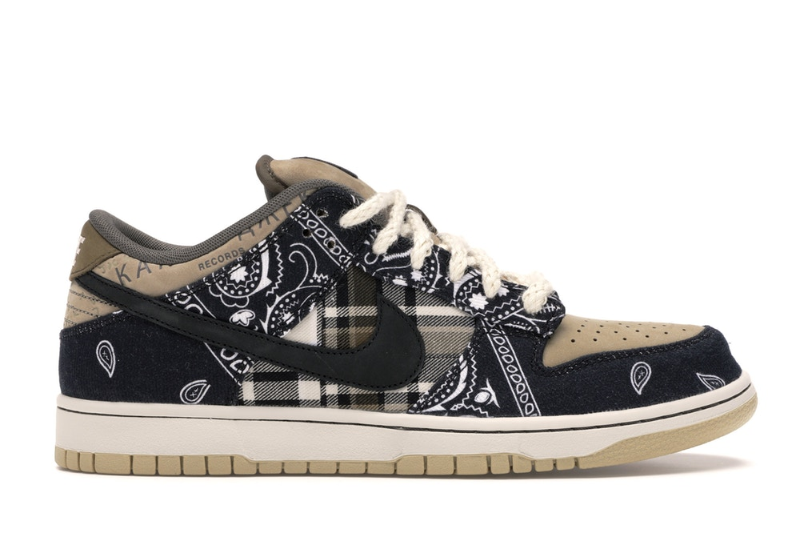
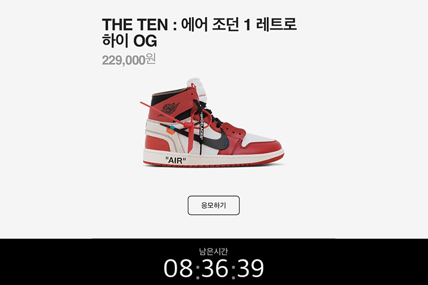
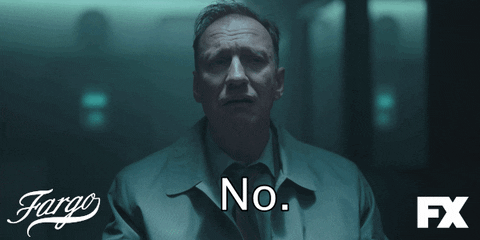
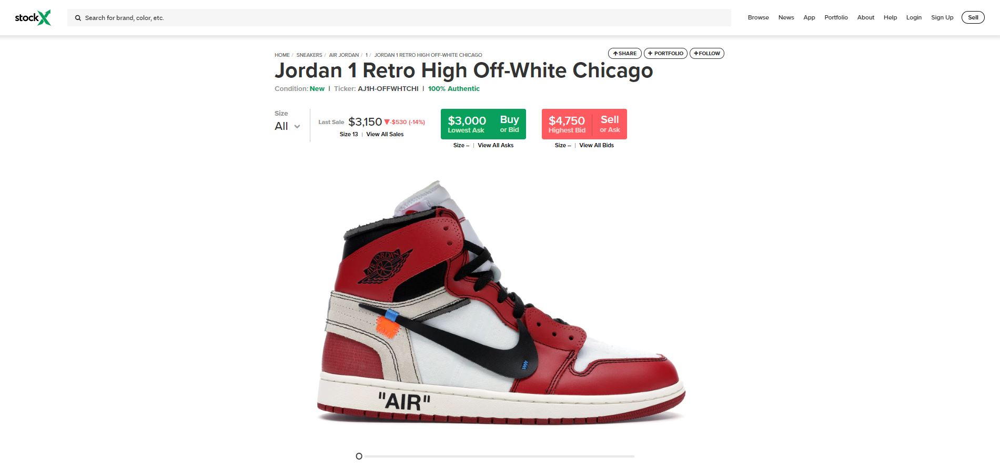

신발 덕후의 이야기

nike x peace minus one
너는 왜 이렇게 비싸니?
신발(SHOES)
땅을 딛고 서거나 걸을 때 발에 신는 물건을 통틀어 이르는 말인데…
왜 이렇게 큰 돈을 주고 신발을 사야돼???
신발 덕후들은 말한다.
“이쁘니까?”
관심이 있는 것에 돈을 많이 투자하는 것은 당연한 것인데...
왜 이렇게 가격이 비쌀까?
나는 원래 비싼놈이야.

LV 트레일 스니커즈- 1,620,000원
뒤의 영롱한 로고를 본적있을 것이다.
그렇다 루이비통이다.
LOUIS VUITTON
버질 아블로가 디자이너로 일을 하면서 다시 살아나고 있는 명품 브랜드이다.
유명한 명품 브랜드들도 신발을 역시 만든다.
명품하면 뭐가 생각이나지?

여러가지 명품 브랜드들이 생각이 날 것이다.
그리고 그것들의 브랜드 가치 또한 굉장히 높고 가격 또한 높게 책정이 된다.
"걔네들은 원래 비싼거다"
내 맘인데?
아니 명품들은 원래 비싸다고 치자.

nike x sakai
너네는 왜 비싸니???

나이키는 전통이 긴 스포츠 브랜드이다.
그리고 또한 주변에 많은 매장들을 볼수 있고
가격대는 보통 20만원이 넘지 않는다
WHY?
안 팔아~
그렇다 안 팔아서 살 수가 없다.

nike SB Dunk Low Travis Scott
이 신발을 본 적이 있니?
올해의 신발로 유력한 유명한 미국 래퍼 트레비스 스캇과 나이키의 콜라보 작품이다.
현재 이 신발의 가격은 $1,050에 stockx에서 판매가 되고있다.
$1,050
아니 나이키 신발이 왜 백만원이 넘지?
아니 그게 원래는 17만 9천원인야
근데 왜?????
못 사니까....
아까도 말했듯이 그냥 안판다
누구나 살 수 있지 못해...
지리는 래퍼 트레비스 스캇과 콜라보한 제품을 매장에서 팔면?
누구나 다 신을 수 있겠지 그런데
THE DRAW SYSTEM
이놈이 우리를 괴롭힌다.

nike the draw
우리가 이 신발을 원래 가격에 가지려면
나이키 공식 홈페이지의 더 드로우에서 당첨이 되야 한다
더 드로우는 쉽게 말해서 그냥 제비뽑기다.
제비뽑기에 당첨이 되면 신발을 주나요?
아니 그냥 살수 있는 기회만 주는거야.
그 확률은 매우 낮고 당연히 누군가는 미당첨이 된다.

결과가 나온 우리의 모습
이렇게 나와같은 모습을 한 사람들은 포기를 하지않는다.
당첨이 되지 않은 사람들은 어떻게 살까?
당첨된 사람들한테 사야지!!!
여기서 가격이 올라가기 시작한다.
구매를 원하는 자들이 판매를 하는 사람보다 훨씬 많다면
그 신발의 가치는 점점 올라가게 된다.
RESELL
이러한 방식을 리셀이라고 한다.
2차 구매자들에게 판매를 하는 개인은 가격을 자기 마음대로 정하고 판매를 할 권리가 있다.
그리고 그 가격을 1차 판매자인 나이키에서 간섭할 권리 또한 없다.
그 미친 가격들을 나이키는 원하지 않는다고 하지만 그들은 절때 이 방식을 고수한다.
자신들의 신발의 가치가 높아지는 것은 그들의 입장에서는 이득일 것이니...
리셀의 구매 방식은 두 가지가 존재하는데
리셀을 대행해주는 대형 사이트 또는 개인 매물을 구매하는 법이 있다.
대형 사이트는 그 신발의 매물을 대량으로 구매하여
그 사이트에서 그 신발의 가격을 책정 후 판매를 하는 방식이고
개인 매물을 구매하는 방법은
유명한 카페 혹은 사이트에서 개인적으로 상품을 올리고 구매를 하는 방식인데
장단점이 존재한다.
검증된 사이트에서 구매를 하는 것은
상품의 가격이 조금 더 비싸지만 정품인 것이 확실하다는 점과 사기를 칠 가능성이 없다는 것!!!
자신이 정, 가품을 구분할 수 없거나 개인 매물 거래 횟수가 적다면
대형 사이트에서 구매하는 것을 추천한다.

stockx의 모습
그래서 누가 비싸게 파는거야?
결국에 이 비싼 신발들의 가격이 왜 비싸냐는 소비자의 탓으로 돌릴 수 있다.
희소성과 유명 아티스트의 착용이 많은 영향을 끼친다.
현재 신발 리셀 시장에서 가장 수요가 많은 나라는

중국이다.
세계에서 인구 비중이 가장 큰 만큼 수요가 많고 신발의 매물량은 한정적이다.
리셀가는 첫 2차 거래에서 동결이 되는 경우가 많은데
이것은 보통 경매 또는 첫 판매자의 생각에서 나온다.
자신이 생각하는 이 매물의 가치를 어떻게 매기는지에 따라 달라지게 된다.
또한 중국에서 구매자가 많은 만큼 세계적으로 구매를 하게 되어
사실상 중국이 신발의 리셀가를 책정하는 셈이 되는 것이다.
그럼 중국이 나쁜거야?
.gif)
그렇지도 않다.
이러한 신발의 리셀의 원리는 모든 시장에서 적용이 되는거니까
어쩔수없는 글로벌시장의 원리일 뿐이다.
신발 가격이 얼마든
신발의 가치는 자신이 매기는 것이므로 구매를 결정을 했다면
자신이 그 신발에 대해 그만큼의 가치를 부여를 하는 것이다.
리셀의 문화가 잘 못 된것이 아니고 명품을 구매하는 것 또한 잘못이 아니지만
자신의 금전적 여유와 그 신발에 매긴 자신의 가치를 잘 생각하여
우리 모두 올바른 신발 구매를 하자